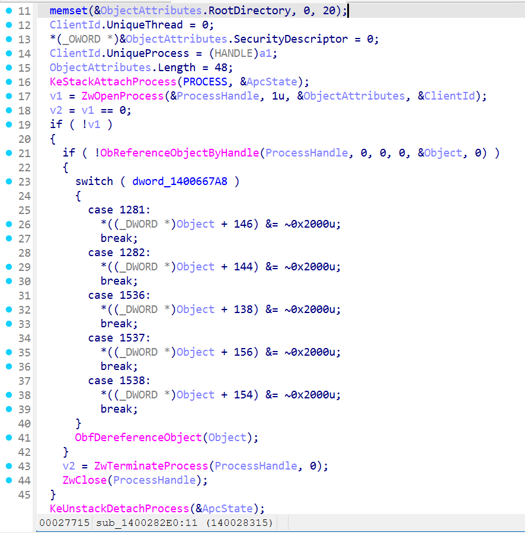
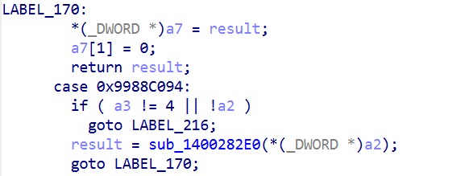
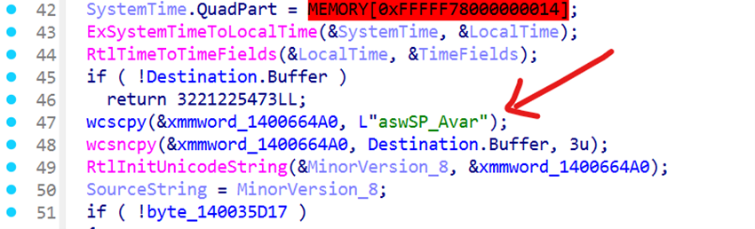

Overview
Approaching kernel exploitation can often lead to a serious headache. Modern operating systems implement a wide range of protection mechanisms designed to safeguard kernel structures (PatchGuard), making low-level attacks increasingly difficult. A common starting point is looking into driver vulnerabilities. Drivers operate in ring-0 and whenever they're flawed, they can provide a pathway into kernel space, potentially resulting in full operating system compromise.
Once a driver vulnerability is abused, you effectively step into “kernel-land” where the system grants a high degree of control. In theory, this could involve actions such as bypassing signature requirements, tampering with protected processes, or interfering with security components such as disabling AntiVirus/EDR. If you’re new to kernel exploitation and want to understand how driver exploitation works, a great learning resource is the HackSys Extreme Vulnerable Driver project: https://github.com/hacksysteam/HackSysExtremeVulnerableDriver.
Before diving deeper, it’s important to understand how drivers receive input. Drivers expose specific IOCTL (Input/Output Control) codes, which define the operations that user-mode applications can request. These IOCTLs form the communication channel between user-land and kernel-land. To make this communication possible, the driver must also expose a symbolic link, typically located under \Device or \DosDevices. Tools like WinObj allow you to inspect these symbolic links quickly and visually.
Introduction
I’ve always found it fascinating how anti-rootkits can act as a double-edged sword. While granting them high privileges makes sense given the stealthy nature of rootkits, this level of access can also be risky and, in some cases, even counterproductive or dangerous for the end user. A well-known example of how an anti-rootkit component can be turned into a weaponized tool is aswArPot.sys, which is capable of terminating arbitrary processes.
For this article, I wanted to offer something that could be analyzed from scratch, so I picked up the awsArPot.sys driver from Avast AV as a subject of investigation. I will walk through the work step by step to provide a clear overview, even for readers who are approaching this area for the first time. Please note: I am not an expert in kernel exploitation. This article reflects my own research and my attempts to learn more about the topic, so forgive me if some details are not perfectly accurate.
Target
The target is to abuse the ZwTerminateProcess syscall in order to kill any process arbitrarily by passing the PID of the target process as a parameter.
Technical analysis
First things first: when evaluating whether a driver can be repurposed for malicious behavior, one typically checks whether it references functions such as ZwOpenProcess/NtOpenProcess and ZwTerminateProcess/NtTerminateProcess. Their presence can indicate that the driver includes logic for interacting with or terminating processes.
Within the Avast AV driver set, aswArPot.sys appears to be the component responsible for anti-rootkit functionality.
After identifying the driver of interest, the next step is to analyze it with a reverse-engineering tool such as IDA or Ghidra.
Kernel drivers include an entry point known as DriverEntry. Using IDA, it's possible to decompile this entry point and view its pseudocode, which resembles C/C++ and provides a clearer understanding of the logic executed during the driver's initialization.
Starting from DriverEntry, we can follow the call chain through the program until we reach the routine where the driver interacts with process-management functions such as ZwTerminateProcess.

So the function that calls ZwTerminateProcess is sub_1400282E0, we'll take note on that.
IDA offers us a cool functionality that allows us to see in a graph view where functions are being called from.

Nevertheless, we have found the ioctl dispatcher located into the sub_140023238 function, as showed in the pic below.
Great! Now we know the ioctl that triggers this behaviour. It's time to find the symbolic link exposed!
I have to admit it, I was stucked for a couple of days because I couldn't find an exposed symlink.
After struggling a little bit deeper inside the reversed pseudocode (check IoCreateSymlink function on the imports table) I found a potential candidate: aswSP_Avar. 
That was a great news after I spent the whole weekend reversing this driver. So I try to run a little C++ program to open a handle to such device and...Error 50: ERROR_NOT_SUPPORTED.
Mmm...that's strange. It should at least let me open a handle but something is not right. Searching on the web, it appears on this article (that I should have checked before) that I was right about the symlink and IOCTL but seems that is has already been discovered by Trellix researchers and patched by Avast.
Conclusion
That ends our journey, the target of this article was to illustrate how I did find the "vulnerable" IOCTL and how we could have exploited it in order to build our personal AV Killer (or any arbitrary process killer).